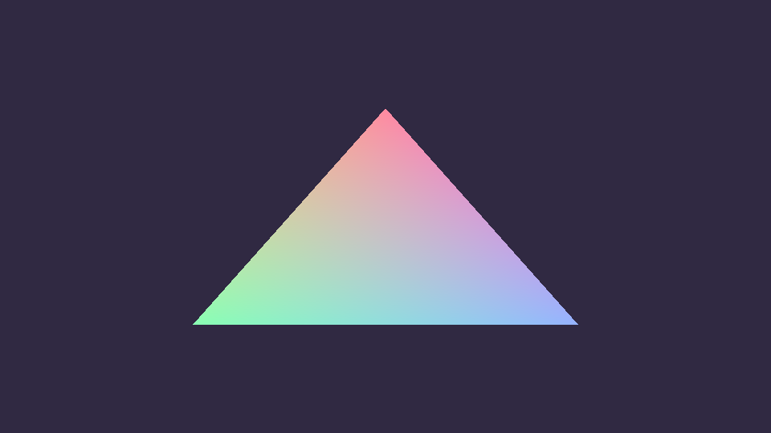
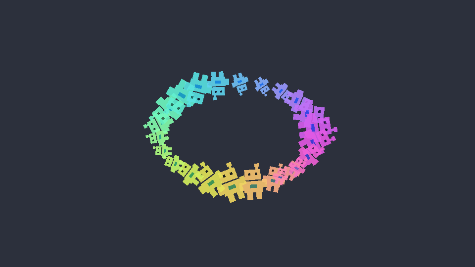
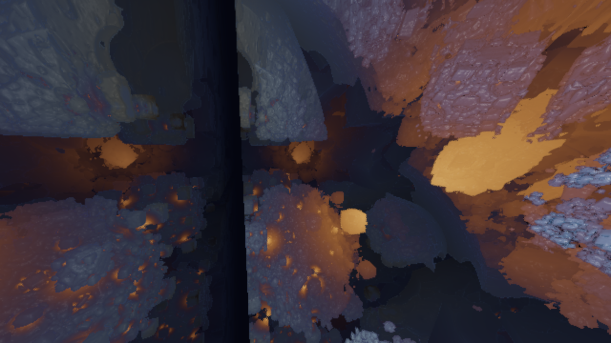

Triangle
Pipeline fundamentals
The smallest complete chad app: a WGSL shader, a render pipeline, and a resize-aware window loop.
Render loop, kept lean
Five executable studies in GPU rendering, timing, batching, and input. Open an example in the browser or go straight to the Rust source.

Pipeline fundamentals
The smallest complete chad app: a WGSL shader, a render pipeline, and a resize-aware window loop.
Fixed-step interpolation
Chunky 20 Hz physics smoothed at render time. Press Space to compare interpolated motion with raw simulation steps.
On-demand redraws
A browser interval wakes the sleeping event loop once per second, demonstrating efficient rendering without shared memory.

Instanced rendering
A generated character texture becomes a dynamic, alpha-blended sprite batch in one instanced draw.

Interactive raymarching
Fly through a repeated Mandelbox with raw mouse input, collision, offscreen rendering, upscaling, and runtime display controls.